creators for zohran!
pbr
back to school with levi's
teen voguerachel sennott and stem's resident hot girl alexis williams talk online activism
document journalthis nyu student's social justice website is filled with answers
blavitytandon student speaks out in code rather than words
washington square newsalexis williams: an activist fighting for change through code
pulse spikespolitical features
stem advocacy
alexis williams is conquering the world one step at a time
cosmopolitanchanging the way you see tech
tedx colorado springshow olay is working to shrink the gender gap in stem
harper's bazaarengineering in a male-dominated field
girls talk techstemtember
lightboxtown and country philanthropy summit
town and countrygwc @ goldman sachs: the girls’ perspective
girls who codeactivism
what is digital blackface? experts explain why the social media practice is problematic
women's healthchatham for black lives teach-in highlights
inequality in the tech space, how to troll trump, and being helpful in the world
i'm over it podcastchatham for black lives event features williams sisters who speak out
tapformer, current chatham high students demand anti-racism changes
tapchatham school board hears demands for anti-racist reforms
courierprofiles
special features
Deputy Press Secretary @ NYC
Beyond excited to share that I’m joining the NYC Office of the Mayor as Deputy Press Secretary for Culture Partnerships and Black media! Organizing for Mamdani’s campaign has been such a joy, and I’m so thrilled to officially join the team. Thank you to the best mentor, Emilia Rowland, for this opportunity. This role is such a dream and I can’t wait to use it to help create a more beautiful New York City.
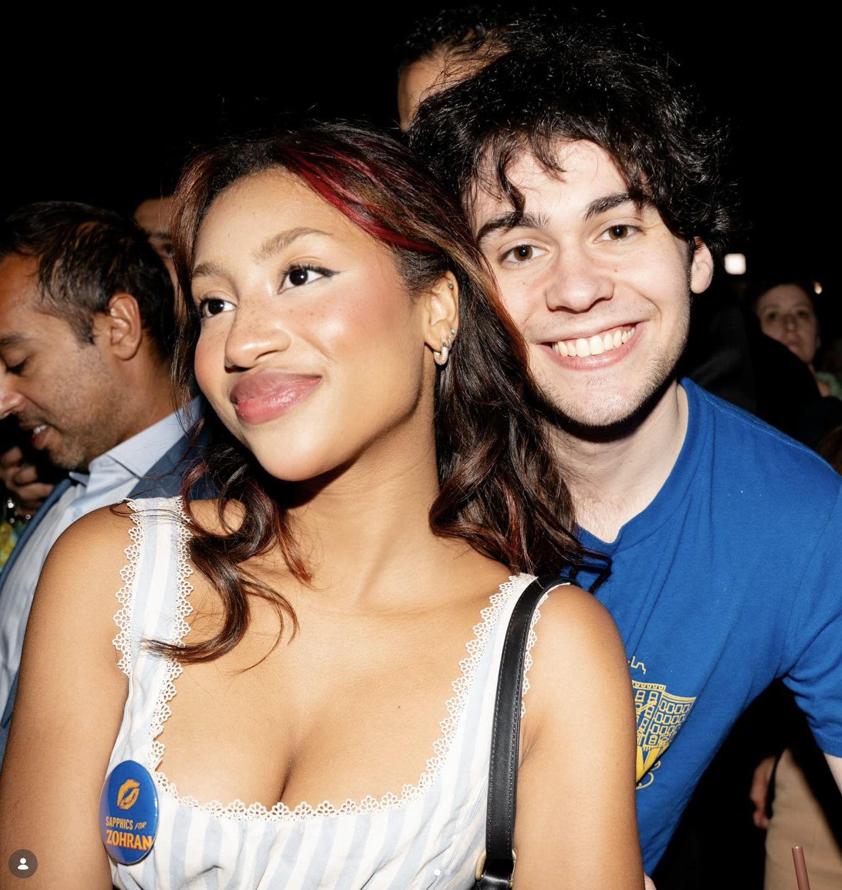
oh just two kids who organized 200+ creators and pulled in hundreds of thousands of $$$$ in in-kind media that has already reached millions for the most energizing political campaign in years 😌 nbdddd 🤷♀️🌟🌟🌟 @creators4zohran
Nearly 1 BILLION views in less than 45 days across social media platforms for a local election!?!
That’s the reach of Aidan Kohn-Murphy and my creator coalition, Creators 4 Zohran — the fastest-scaling, creator-led civic campaign in NYC in recent election cycles for Zohran Mamdani’s 2025 mayoral campaign.
Working in partnership with Emilia Rowland, we built a first-of-its-kind, creator-led content engine for a political campaign. Our cohort was a multigenerational, multicultural, and multifaceted group of New Yorkers, plus a few supporters from around the country, whose content was powered by their own authentic voices and lived experiences. What tied it all together was that people genuinely felt heard and seen by Mamdani’s focus on affordability and his clear policy commitments.
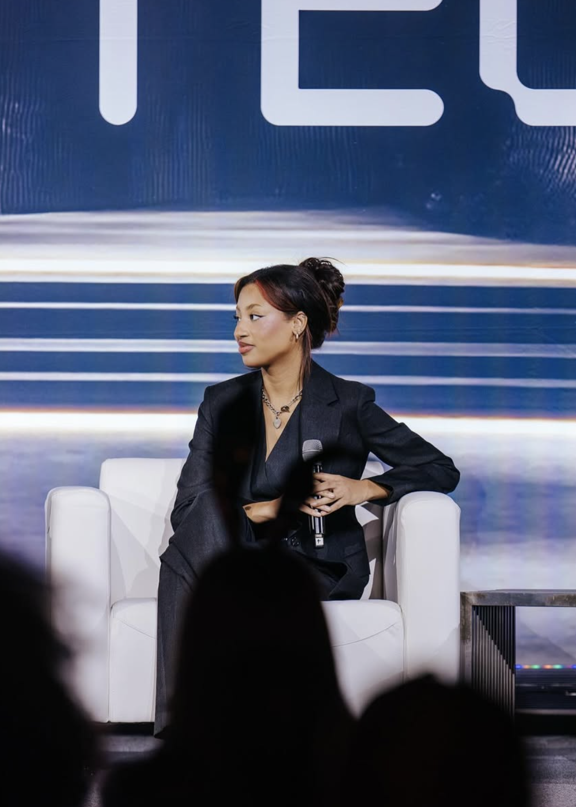
Honored to have been given the opportunity to speak at AfroTech 2025, sharing all my insights about the creator economy and maintaining your unique identity as a creator.
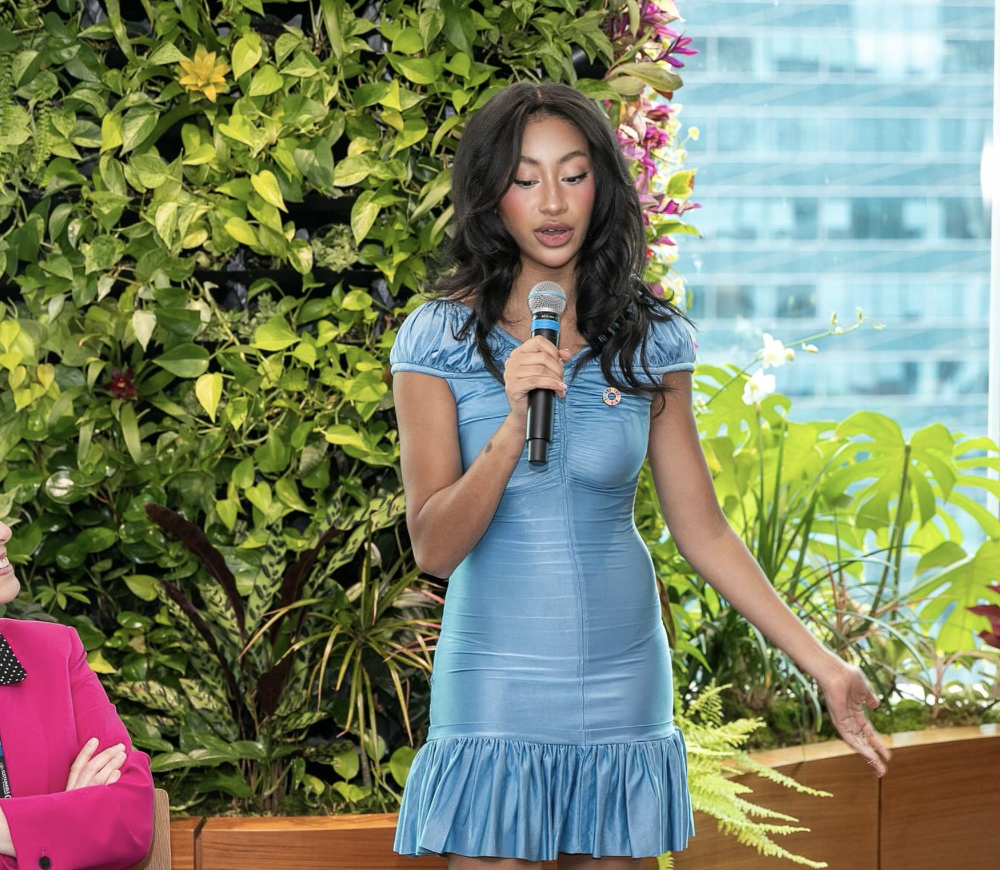
Had a blast talking Gen-Z, AI, and the future of work at @salesforce. For me, a great workplace starts with strong foundations: true inclusion, bridging different lived experiences, and prioritizing social impact & investing in the communities where your business operates. Not only do companies owe consumers a great experience, but their labor force and local community as well!! So many thanks to Project Everyone @theglobalgoals and @thejusticefaith for giving me the space to share! 💋💋
Last month, I had the privilege of hosting the Creative Summit Stage at Web Summit Vancouver, the biggest stage I've spoken on so far at the biggest tech conference in the world. Still can’t believe it happened.
For those who don’t know, Web Summit is one of the largest global gatherings for tech, startups, and innovation, and this was Vancouver’s first time hosting one of their events, bringing together thousands of people across industries to talk about the future we’re all building.
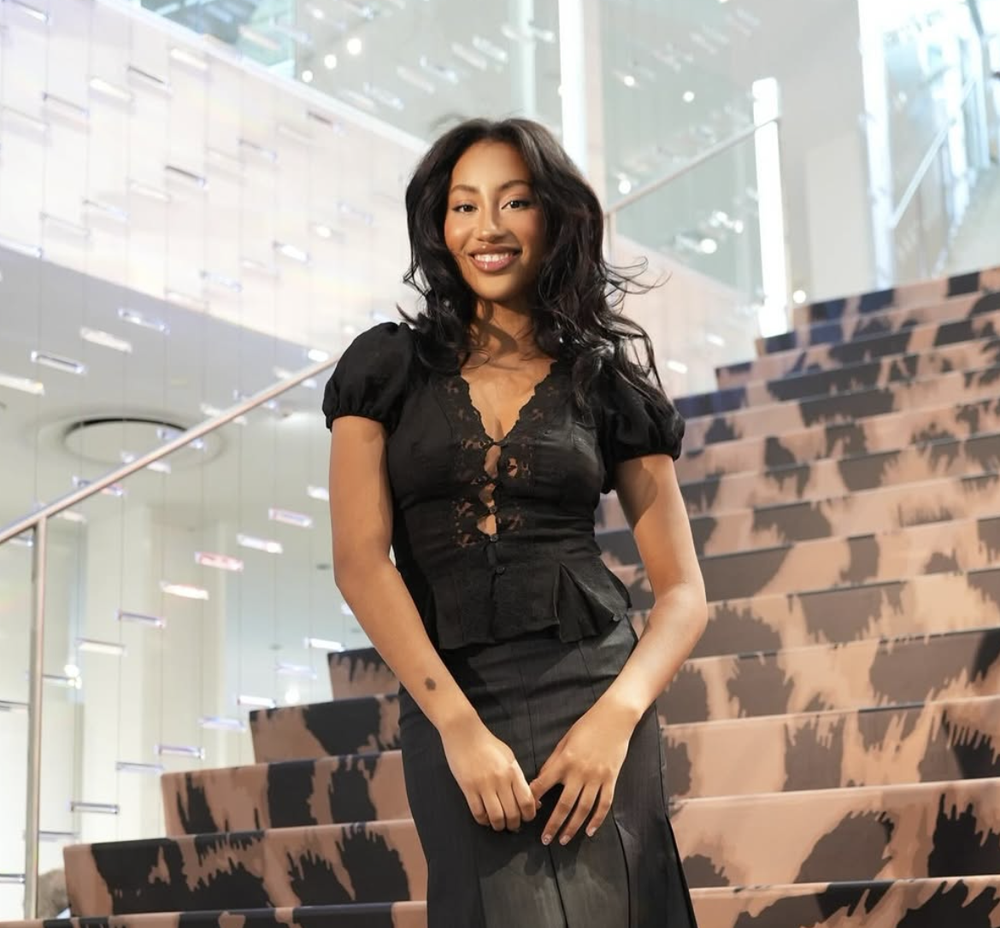
Diane von Furstenberg x @vitalvoices working on making those UN SDG targets !!! 💪
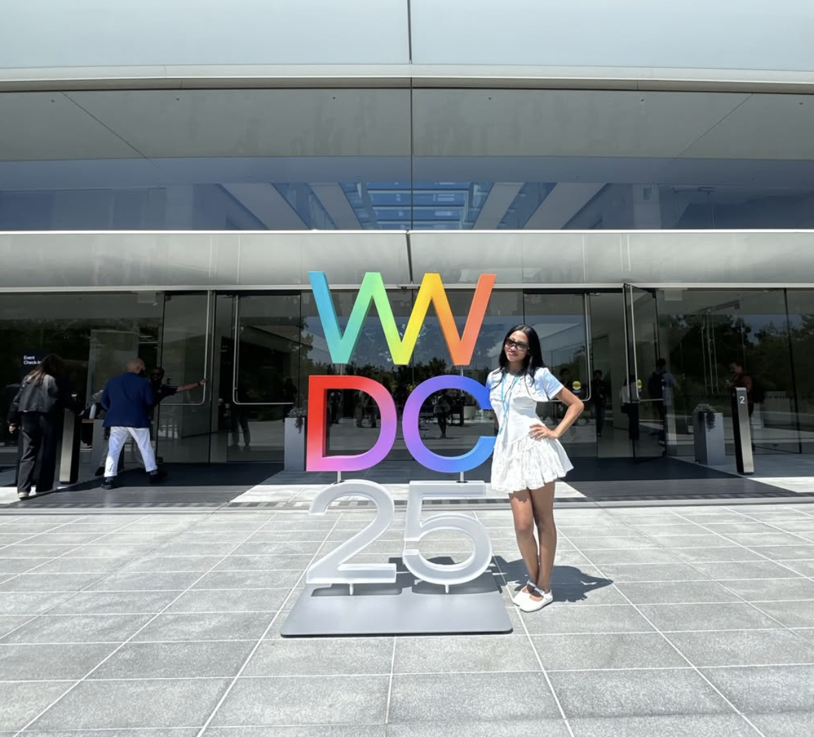
Last week I had the pleasure of joining a group of student developers at Apple’s WWDC25 event. In 2018, I received the same scholarship these students were awarded and it kick-started my confidence in pursuing engineering.
The importance of recognizing developers from underrepresented communities, especially women, is hard to overstate. We need us in these rooms. As builders, as critics, and as people willing to push for better from those holding the reins of power.
I am so grateful to be featured in Mission Magazine's most recent issue, "The New Order." An issue highlighting the powerful impact the youth has had on the world. "The New Order" features so many heavy hitters in this space as well as impactful entertainers that I've looked up to for ages. To be included in the same conversations as these amazing individuals is such a pinch-me moment. During these difficult times it means so much not only to have my work highlighted, but celebrated.
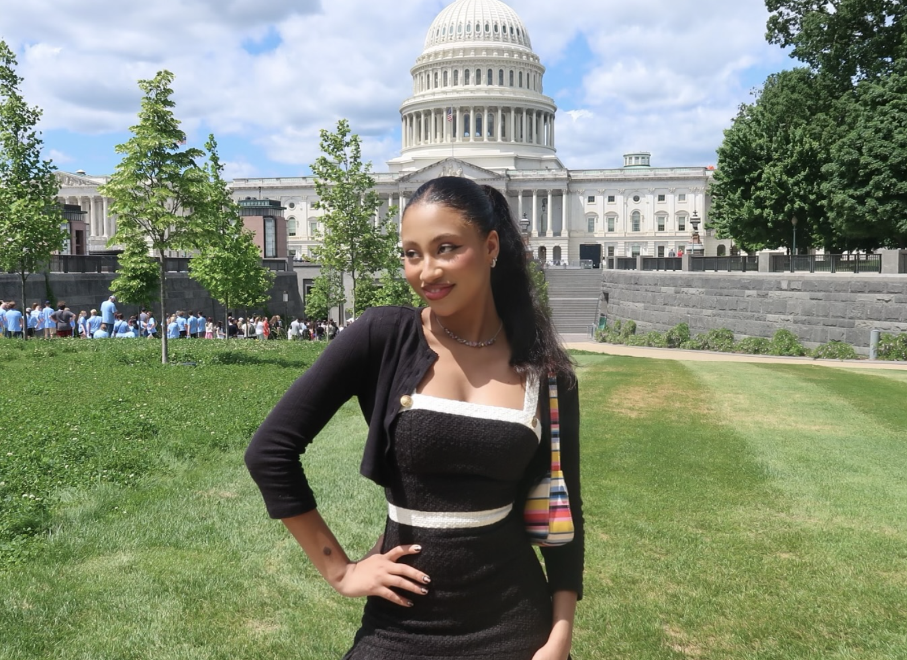
Content meeting at Congress with Jasmine Crockett
Thrilled to kick off the New Year with this incredible honor from Black Enterprise Magazine. I’m so proud to share that I’ve been included in their 2024 "Black Enterprise 40 Under 40" list for Politics and Social Impact.
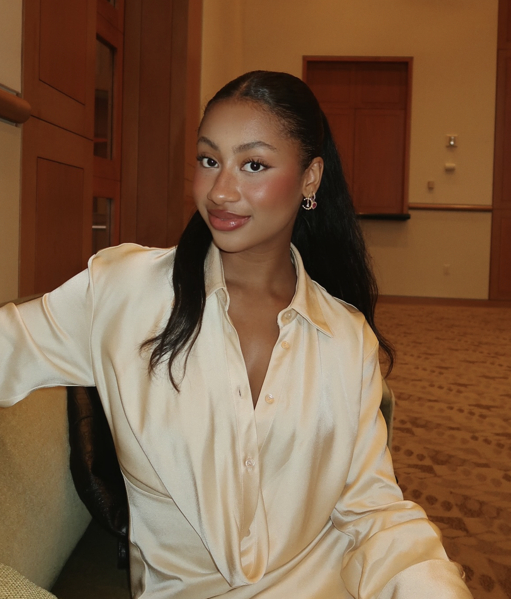
honored to have joined @noteswithkai’s live taping at @njpac tonight for a conversation around gen-z, voting, and our complicated relationship with electoral politics.
2025 has been a whirlwind so far, and I’ve been diving deep into my work at the intersection of code, social impact, and creativity. Here are some highlights I’m especially proud of!
Collaboration With TOGETHXR: I’m obsessed with women’s sports, especially college basketball (yup, my team won yesterday 😌 ). Recently, my women’s sports stats project, delivering real-time data, blew up on social media, which brought me to TOGETHXR, who I excitedly partnered with for some pre-NCAA Tournament content. It was amazing to bring my STEM degree to life by helping fans fill out their brackets based on real-time stats. Can’t wait to share more updates from Togethxr x Alexis!
Feature in Refinery29: One of my year’s highlights so far was joining Refinery29 and Code.org's “Code is Everywhere” campaign. Growing up, I never saw a computer scientist who looked like me: a Black girl in pink, jamming to Taylor Swift while furiously debugging. This campaign gave me the chance to change that narrative and represent the next generation of coders, inspiring others to see themselves in the field!
"Abortion is Freedom" Campaign: I was proud to join SOZE and the Women's Equality Center's “Abortion is Freedom” campaign, highlighting the hashtag#GreenWave movement in Latin America. This movement, which protects bodily autonomy, is something we need in the U.S. now more than ever. As a queer woman, I firmly believe in fighting for everyone’s right to bodily autonomy, and I’m honored to support this powerful campaign.
Feature in Pinky Magazine: I had an insightful conversation with Halle Robbe for the Creative Technologists issue of Pinky Magazine. We discussed the cost-benefit ratio of AI in our daily lives and the fast-paced evolution of technology, which often feels more like faux-advancement. We also explored the impact of this progress on people and the planet, stressing the importance of thinking critically about modern tech.
Gloria Steinem Talking Circle on Sustainable Fashion: Lastly, I joined a talking circle at Gloria Steinem’s house, focused on sustainable fashion, hosted by Sophia Kianni and Phoebe Gates. It was an inspiring experience to discuss pressing social issues with such a visionary figure. I’m excited to continue doing impactful social justice work, inspired by Gloria’s legacy and vision.
City of New York
Deputy Press Secretary— Full-time
Leading creator strategy and digital distribution across policy initiatives, translating city governance into high-reach, platform-native content.
Creators for Zohran
Co-Founder Co-Director
Built and scaled a creator network that reached over 1B monthly views during the mayoral campaign.
@FEMINIST
Digital Editor, Content Collaborator— Consultant
Wateringhole Media
Host— Consultant
Hosts 'Clueless with Alexis' and 'Everything's Fine' a weekly web-series designed to engage Gen Z audiences on topics ranging from environmental justice and racial equity to economic fairness and civic action. Interviewing experts and thought leaders, bringing well-researched, dynamic conversations to life.
The MTV Staying Alive Foundation
Digital Strategist: Everybody's Fight— Consultant
Developing and executing social media strategies to promote Everybody’s Fight: An In Bloom Series on Reproductive Freedom, a compelling docuseries highlighting the experiences of individuals seeking reproductive care, healthcare providers, and advocates navigating the challenges of a post-Roe reality.
@Impact
Digital Strategist: Everybody's Fight— Consultant
Launched Impact's shortform video content engine, an award-winning digital platform for young changemakers, on socially impactful and culturally relevant topics.
Kode with Klossy
Content and Community Coordinator— Full-time
Led a record-breaking social media campaign for Kode With Klossy, driving a 200% overall increase in community engagement and achieving the highest organic reach in the organization’s history. Managed day-to-day social media operations and developed strategies that fostered a vibrant online community, including an ambassador program that significantly boosted brand alignment and interaction.
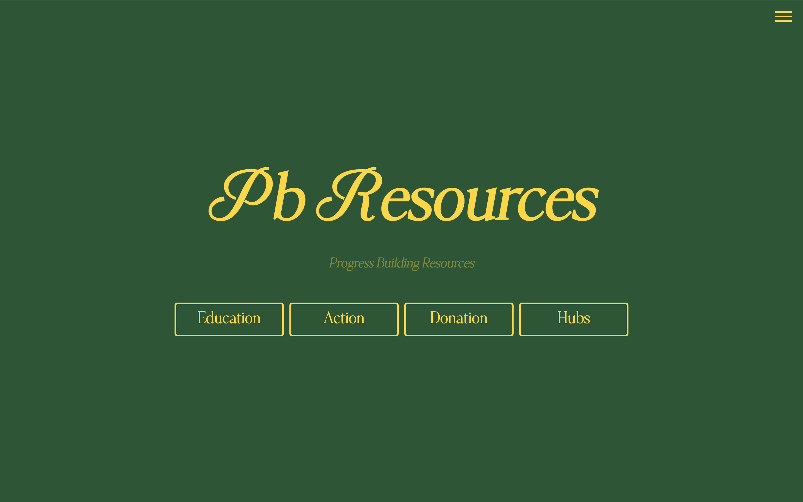
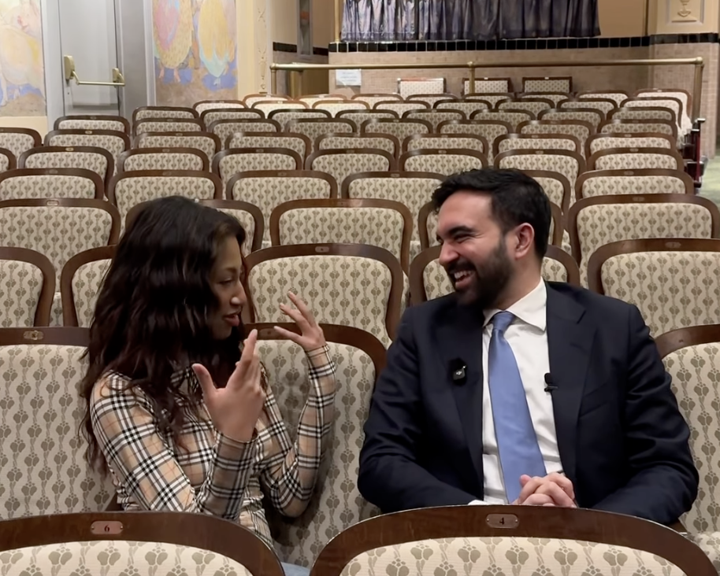
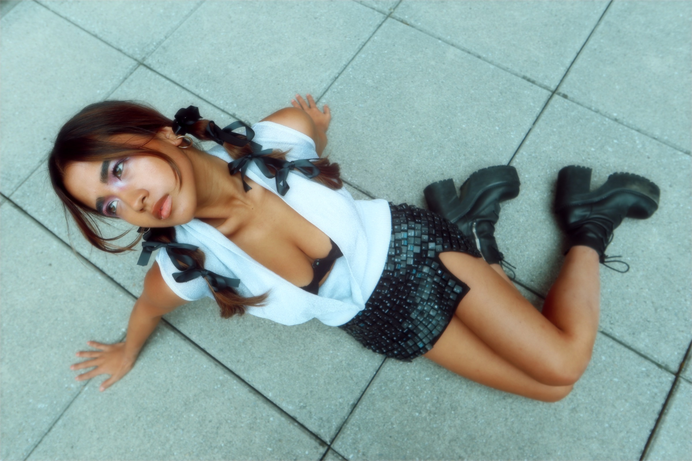
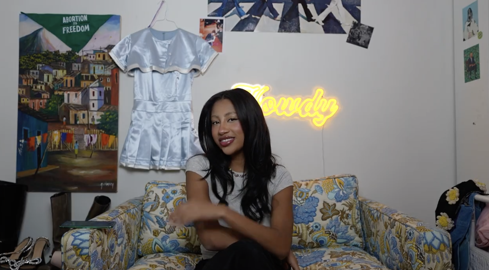
Yes, Black Women Are in Pain. Why Don’t You Believe Us?
Reflections from an intimate conversation about birth care with Synclaire Warren and Elaine Welteroth, Founder of Birthfund
So… We agree? — Thoughts on Democracy
I was recently asked what democracy means to me, which turned out to be a more mind-bending question than it should considering we, as Americans, are indoctrinated from a young age to think that democracy is synonymous with America.
Dear Gen-z, You Have a Blackface Problem Too
American popular culture has always terrorized Black people in ways that are both blatant and inconspicuous since the beginning of not only mainstream media, but the legalized freedom of Black bodies themselves. This started with public lynchings during the middle of the eighteenth century, which occurred predominantly in the south (NAACP, “The History of Lynchings”).
Keyword Analysis on Access: The Great Equalizer for White Women
My entire life has been defined by the word access. Access is make or break. Access is the key to the entire universe, but also the thing that can shut you out from everything completely. Access determines the lives we live and how comfortable we get to be.
I build things on the internet that make people care, and then figure out how to turn that care into action.
I’m a 25-year-old creative technologist, digital creator, and organizer based in New York City. My work lives at the intersection of tech, culture, and public systems—focused on how ideas spread, who they reach, and what people actually do with them.
I started building PB-Resources during a moment when people were looking for ways to show up and didn’t know how. It became a toolkit for action used by over 2 million people—connecting education, resources, and direct pathways to civic engagement through things like automated outreach tools and curated infrastructure for participation. That same instinct—to make things more accessible, more usable, more human—has shaped everything I’ve built since.
From collaborating with platforms like Meta, Teen Vogue, and Goop, to building Softwear by Lex—where I explore storytelling through wearable tech, 3D-printed pieces, and creative direction—my work has always blended technical systems with culture and expression. Across projects, I move between building products, producing content, and designing experiences that translate complex ideas into something people can actually feel.
That approach scaled during my work leading creator organizing for Zohran for NYC, activating 600+ creators and reaching over 1 billion monthly views, turning distributed content into a coordinated system for political communication.
Now, as a new media Deputy Press Secretary for the City of New York, I focus on how information actually moves. I build systems that use creators, community, and the internet to translate policy into something people can see, understand, and engage with—scaling government communication in a way that reflects how people actually consume information today.
Across everything I do, the throughline is the same: making complex systems legible, making participation feel possible, and building tools that help people move from awareness to action.
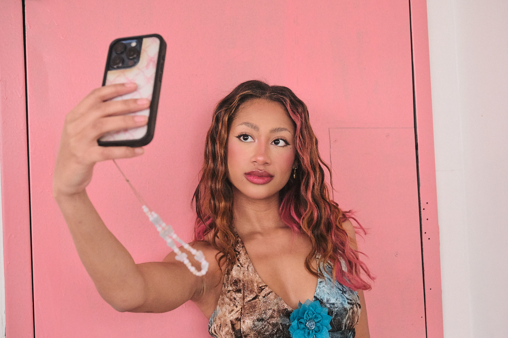
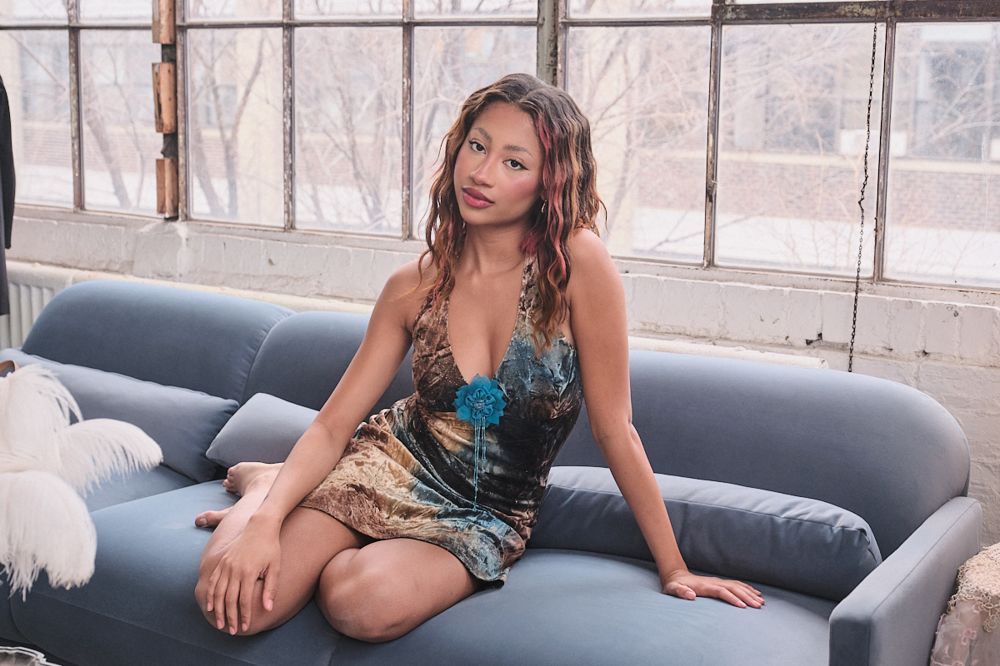
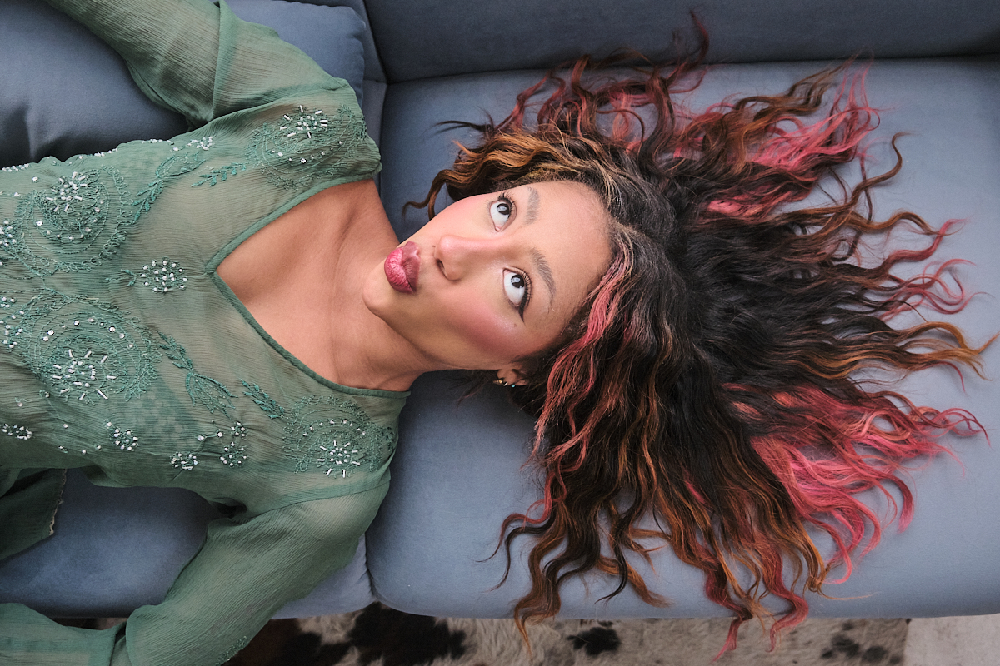